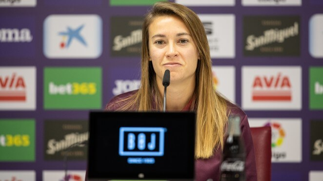

<!DOCTYPE html>
<html lang="es"></html>
<head>
    <meta charset="UTF-8">
    <meta name="viewport" content="width=device-width, initial-scale 1.0">
    <meta name="author" content="Aina Muñoz Fernández">
    <meta name="generator" content="Visual Studio Code">
    <meta name="description" content="Página principal de la web oficial del Eibar FC Femenino">
    <meta name="keywords" content="fútbol femenino liga iberdrola ">

    <title>Web Oficial del equipo de fútbol Eibar Femenino</title>

    <link rel="stylesheet" type="text/css" href="./css/common.css">
    <link rel="stylesheet" type="text/css" href="./css/index.css">

</head>

<body>

    <div class="div-header">
    <header>       
        <!--imagen liga iberdrola-->
        
    
    </header>

    <div class="header-equipo">
    
        <h1>SD Eibar Femenino </h1>  
        <!--Menú de navegación de classificacion / resultados /galeria-->
    
        <ul class="ul-navbar">
        
            <li><a href="./web/classif.html">Clasificación</a></li>
            <li><a href="./web/resultats.html">Resultados</a></li>
            <li><a href="./web/galeria.html">Galeria</a></li> 
            <li><a href="./web/enquesta.html">Encuesta</a></li> 
        
        </ul>

    
    </div>

    </div>
    
    <main>
        <div class="div-content-index">
            
                <!--Cuerpo principal de la página-->
                <article id="index-article">
                    <section class="escudo-aside">
                        <!--imagen escudo eibar-->
                        
                    
                    </section>
                    <section>
                        <!--menú navegación info general y planté-->
                        <div id="div-menu-index">
                            <ul id="menu-index">
                                <li><a href="./web/infogeneral.html">Información general</a></li> 
                                <li><a href="./web/planter.html">Plantilla</a></li> 
                            </ul>
                        </div>

                    </section>

                </article>    
        </div>

        <aside>

            <section class="last-news">

            <!--ultimes noticies-->
            <div class="news"> <a href=""> <h4>EL PRIMER EQUIPO FEMENINO CAE FRENTE AL DEPORTIVO DE LA CORUÑA</h4> </a>
                
                <h6>05/12/2020</h6>
                <h5></h5>
            </div>

            <div class="news"> <a href=""> <h4>MALENA MIERES: “EL EQUIPO AFRONTA EL PARTIDO CONTRA EL DEPOR IGUAL QUE LOS ANTERIORES, LUCHANDO Y JUGANDO COMO SIEMPRE”</h4> </a>
                
                <h6>02/12/2020</h6>
                <h5>“Esperaba tener más nervios o más presión en esta liga, pero mis compañeras me lo están poniendo muy fácil y estoy muy contenta” ha destacado la guardameta.</h5>
            </div>

            <div class="news"> <a href=""> <h4>IKER DORRONSORO: "LA FUERZA DEL EQUIPO ESTÁ EN EL TRABAJO QUE HACE"</h4> </a>
                
                <h6>16/10/2020</h6>
                <h5>El técnico armero destaca "la verticalidad" del Madrid CFF</h5>
            </div>
            <div class="news"> <a href=""> <h4>CARLA MORERA: “NOS HEMOS DEMOSTRADO A NOSOTRAS MISMAS QUE SOMOS CAPACES”</h4> </a>
                 
                <h6>08/10/2020</h6>
                <h5>A la jugadora armera no le sorprende el nivel demostrado por el equipo</h5>
            </div>
            <div class="news"> <a href=""> <h4>EL EIBAR CONSIGUE UN MERITORIO EMPATE ANTE EL LEVANTE</h4> </a>
                
                <h6>08/10/2020</h6>
                <h5>El equipo demuestra su potencial y concentración</h5>
            </div>

            </section>

        </aside>

    
    </main>

</body>

<footer>
    <!--aquí va tema copyright + info contacto + redes sociales-->
    
    <!--esta lista tendrá que ir inline-->
    <ul class="contact"> 
        <li><p class="contact-text">&copy; SD Eibar FC Femenino</p></li>
        <li><address><p class="contact-text">Ipurua Kalea 2, 20600 Eibar (Gipuzkoa)</p></address></li>
        <li><p class="contact-text">Telf. 943 201 831</p></li>
        <li><p class="contact-text">Fax. 943 202 606</p></li>
        <li><a href="https://www.instagram.com/sdeibar/?hl=es" target="_blank">
            
        </a></li>
        <li><a href="https://www.facebook.com/sdeibar/" target="_blank">
            
        </a></li>
        <li><a href="https://twitter.com/SDEibar" target="_blank">
            
        </a></li>
        <li><a href="https://www.youtube.com/channel/UClHd-P6Bfkm1dlUkMdkTemg" target="_blank">
            
        </a> </li>
      </ul> 
    
     
</footer>

